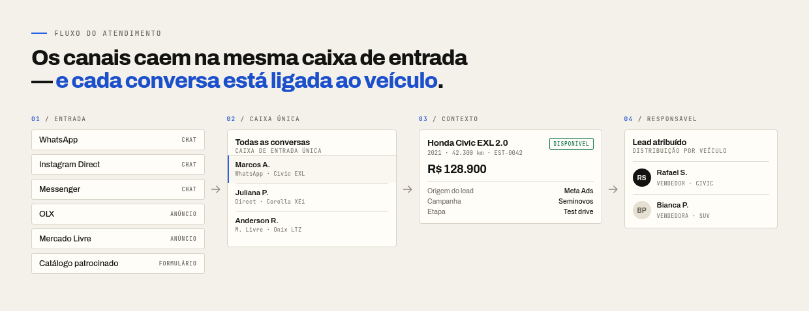
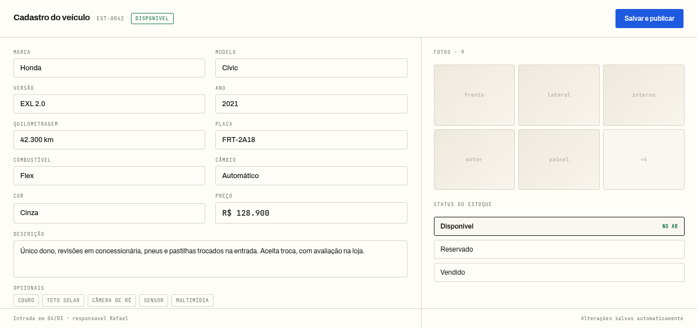
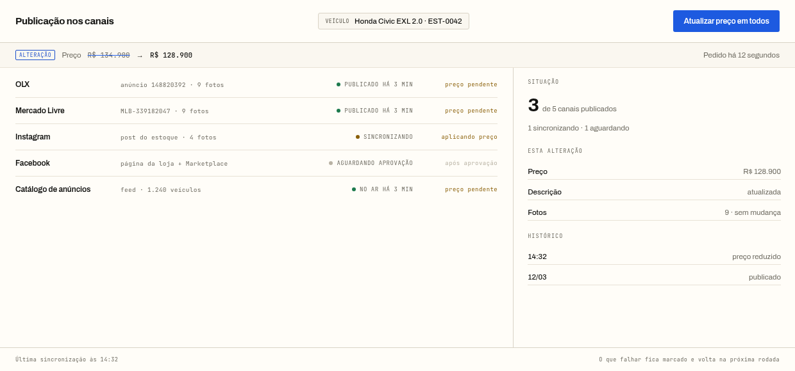
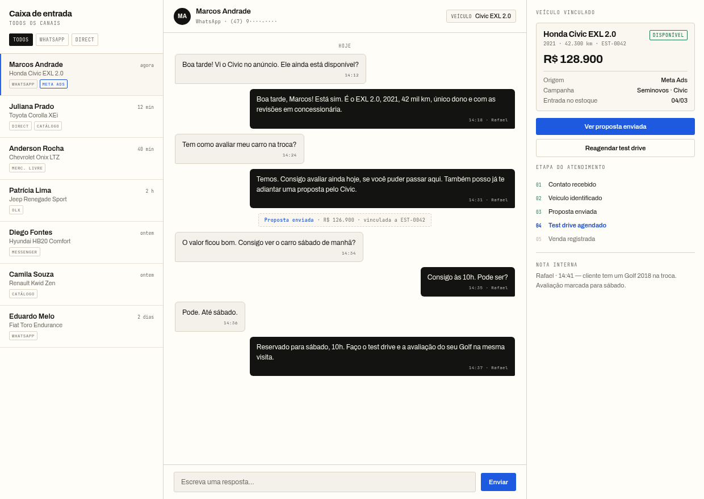

Etapa 01MVP
Cadastro central de veículos
Um único cadastro por veículo, com fotos, preço, quilometragem, versão, descrição e status do estoque. É a base de todas as etapas seguintes.
Módulo · Atlas
Sistema de gestão para lojas de veículos
O estoque da loja passa a ser a fonte oficial dos dados. Preço, quilometragem, fotos e status vêm do mesmo registro — e OLX, Mercado Livre, Instagram e Facebook deixam de exigir trabalho manual.
2021 · 42.300 km · Automático · Cinza
Único dono, revisões em concessionária, pneus e pastilhas trocados na entrada.
Preço reduzido às 14:32 — anúncios e catálogo atualizados
Vendido em 12/03 Todos os anúncios saíram do ar no mesmo momento, incluindo o catálogo. Nenhum cliente liga para perguntar por um veículo já vendido.
O problema não é falta de ferramenta, e sim a ausência de uma fonte única para os dados do veículo. Quando cada canal mantém a sua cópia, a cópia desatualiza.
O preço do veículo foi reduzido em R$ 4 mil na loja e o anúncio permanece no valor anterior. O cliente chega esperando outro valor, e a negociação começa de forma errada.
O anúncio não foi retirado do canal. A loja continua recebendo ligações sobre um veículo já entregue, e a equipe comercial gasta o dia explicando a situação.
Não existe um registro oficial de quilometragem, valor de entrada ou custo. Duas pessoas informam versões diferentes sobre o mesmo veículo.
Fotos, descrição e dados da versão são refeitos em cada canal. O trabalho de cadastrar o mesmo veículo se repete em vez de ser reaproveitado.
O objetivo não é apenas publicar anúncios, e sim transformar o processo manual da loja em um caminho único, em que cada etapa alimenta a seguinte.
Um único registro com fotos, preço, quilometragem, versão, descrição e status do estoque. É a fonte oficial dos dados.
O mesmo registro é enviado ao OLX, ao Mercado Livre, ao Instagram, ao Facebook e ao catálogo de anúncios patrocinados, respeitando as regras e os limites de cada canal.
Contatos do WhatsApp, Direct, Messenger e marketplaces chegam ao mesmo lugar, associados ao veículo que gerou o interesse.
Cada lead tem responsável, histórico e etapa. O vendedor sabe quem já respondeu, quem pediu proposta e quem perdeu o interesse.
Ao marcar o veículo como vendido, os anúncios são retirados, e o estoque e os indicadores são atualizados automaticamente.
Cadastrar publicar receber negociar vender atualizar estoque, indicadores e custo por canal
Como o atendimento funciona na etapa 03: os canais caem na mesma caixa de entrada e cada conversa carrega o veículo que a originou.

As etapas 01, 02 e 03 formam o MVP: cadastro, publicação e atendimento — do carro no pátio ao lead respondido. A etapa 04 fecha a operação da loja. Cada etapa declara os módulos que entrega.
Um único cadastro por veículo, com fotos, preço, quilometragem, versão, descrição e status do estoque. É a base de todas as etapas seguintes.
Módulo · Atlas
Publicar, atualizar preço, sincronizar informações e retirar os anúncios quando o veículo é vendido. O mesmo registro gera o feed do catálogo e o custo por canal.
Módulo · Fama
Reunir contatos, associar cada interessado ao veículo, distribuir os leads entre os vendedores e acompanhar o atendimento até a resposta.
Módulos · Argos e Hermes
Compras e entrada de veículos, clientes, propostas, vendas, comissões, despesas, documentos, financeiro e relatórios gerenciais.
Módulo · Ágora
Três telas resumem a operação: cadastrar o veículo, publicar nos canais e atender quem chega. Tudo parte do mesmo registro.
Fotos, preço, quilometragem, versão, opcionais e status em um registro só. É o dado que alimenta todos os canais — e o mesmo que o vendedor consulta no balcão.

Um clique publica, atualiza preço e retira o anúncio. Cada canal mostra o seu estado — publicado, sincronizando ou aguardando —, e o que falha fica marcado para a próxima rodada.

Toda conversa chega na mesma caixa, ligada ao veículo e à campanha que a trouxe. O lead tem responsável, etapa e histórico até a venda.

Por isso o tráfego pago entra no MVP pelo lado do dado — alimentando a mídia com o estoque oficial e medindo o retorno — e não pelo lado da compra de mídia.
O mesmo registro do veículo gera o feed estruturado que alimenta o catálogo de anúncios. Quando o preço muda ou o veículo é vendido, o feed é reescrito junto com os anúncios.
Cada canal recebe um link com identificação própria, para que o lead chegue com a origem e o veículo que gerou o interesse registrados.
O investimento do mês é lançado por canal. No início o lançamento é manual; a importação via API entra quando a conta permitir.
Investimento dividido pelas vendas, com o custo por lead no meio do caminho. É o número que orienta a alocação de verba no mês seguinte — e que nenhum marketplace entrega.
Gestão de campanha — orçamento, lance, público e criativo — fica fora do MVP. O sistema entrega o dado e mede o retorno; não substitui o gestor de mídia.
As etapas dizem quando cada parte entra. Os módulos dizem do que o sistema é feito — cada um responde por uma parte da operação da loja.
O registro do veículo. Fonte oficial de preço, quilometragem, fotos e status do estoque.
Leva o veículo para fora: canais, catálogo patrocinado e feed de anúncios.
Traz o que chega de fora: WhatsApp, Direct, Messenger, marketplaces e formulários.
A conversa com o cliente: caixa de entrada, atribuição ao vendedor e histórico por veículo.
A operação da loja: compras, vendas, comissões, financeiro e indicadores.
Um MVP enxuto, com escopo fechado, para comprovar o primeiro marco antes de qualquer expansão. Os valores abaixo são uma proposta, não uma tabela de preços.
Sem limite de usuários, de leads e de cadastros. Todo vendedor usa, todo interessado entra, todo veículo é cadastrado — sem cobrança por assento, por lead ou por anúncio.
Os valores são uma proposta em negociação, não preços de mercado validados. O MVP inclui o cadastro, a publicação nos canais, o catálogo patrocinado, o custo por canal e a gestão de leads. A gestão de campanha de mídia não está incluída.
A partir daí, o sistema evolui para a gestão de leads e para a operação completa da loja. A implantação é feita com o estoque real da sua loja, não com dados de exemplo.